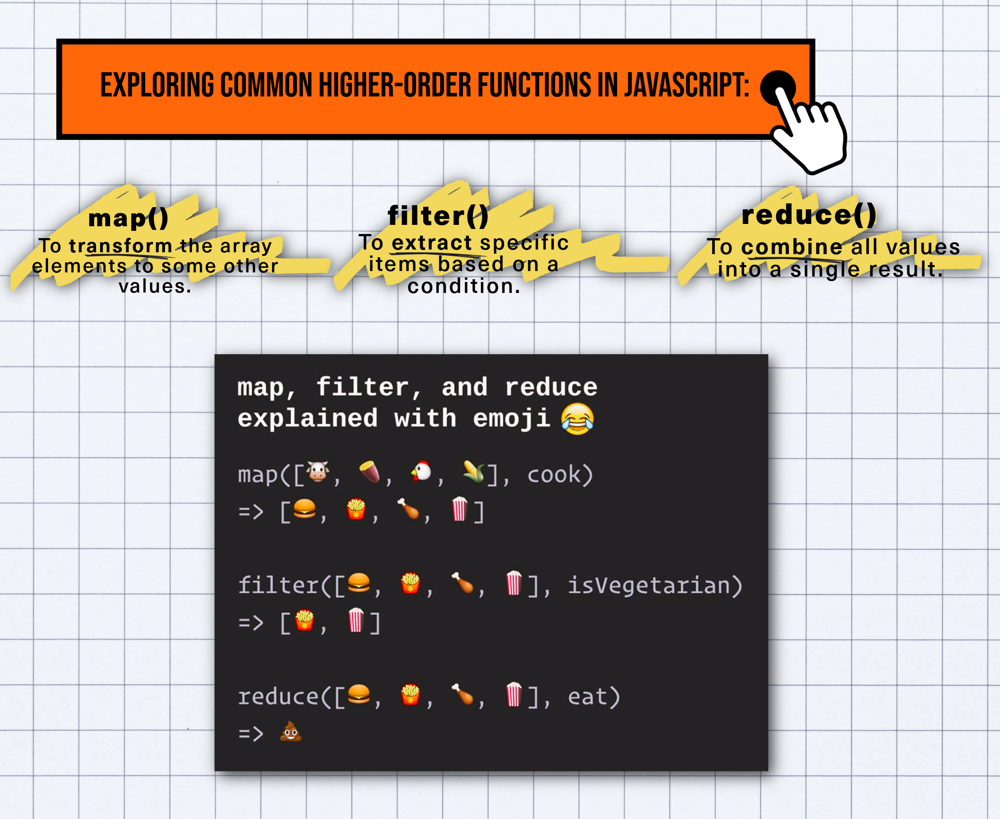

Higher-Order Functions & Composition
Functions in JavaScript are First-Class Citizens: they can be stored in variables, passed into other functions as arguments, and returned from functions as results.
1. What is a Higher-Order Function (HOF)?
A HOF is any function that operates on other functions (either taking functions as input or returning a function). Built-in array utilities like map, filter, and reduce are standard HOFs.

2. Declarative Pipelines vs Imperative Loops
Instead of mutating array indices with manual for loops, HOFs allow chaining pure, single-purpose transformations. This minimizes state mutations and bug surface area.
3. Function Composition (compose)
Function composition combines multiple functions into a single pipeline where the output of one function becomes the input of the next.
Mathematically: (f ∘ g)(x) = f(g(x)) (right-to-left execution).
The Challenge: Function Composition Pipeline
Implement a function compose(...fns) that accepts multiple single-argument functions and returns a new function executing them in right-to-left order.